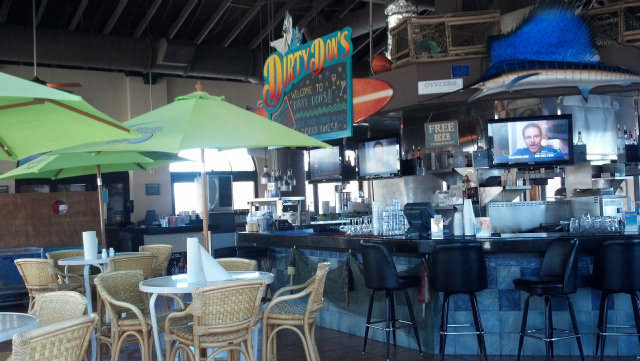
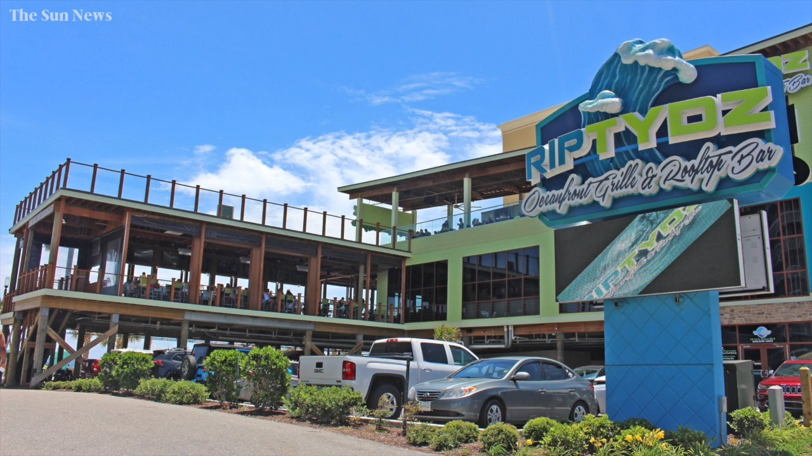
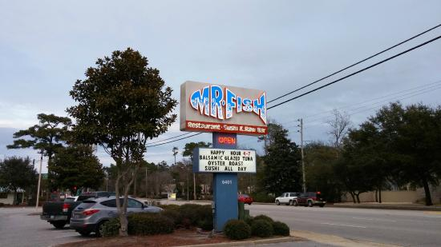

Dirty Don's - Oyster Bar and Grill
Come down to Myrtle beach's Dirty Don's Oyster Bar and Grill. Enjoy one of our many seafood and wing options at one of our many locations. Enjoy the rustling waves of the sea as you eat at our peir-adjacent bar, or talk a walk from your hotel building down to our smaller location on 21st ave. north. Try Dirty Don's on your next trip down here to myrtle beach.
RipTydz - Oceanfront Grill and Rooftop Bar
RipTydz is a 3-story oceanfront grill and rooftop bar, complete with indoor seating for those who want to stay inside, as well as the previously mentioned rooftop bar, complete with an astonashing view of the myrtle shores stretching out into the sea. Enjoy our many different food options from seafood, to chinese, to southern, our diner has something for everyone to enjoy.
Mr. Fish - Seafood and Sushi Bar
Mr. Fish is a very popular and delicious seafood and sushi bar, here to bring you the best experience we can offer. Choose from one of our many apetizer options like the calimari plate. Once you and your party are finished with your appetizers, choose from our diverse rage of seafood and sushi from flounder to salmon. Almost any seafood you can imagine will be presented at your table as a delectable meal for you to enjoy.